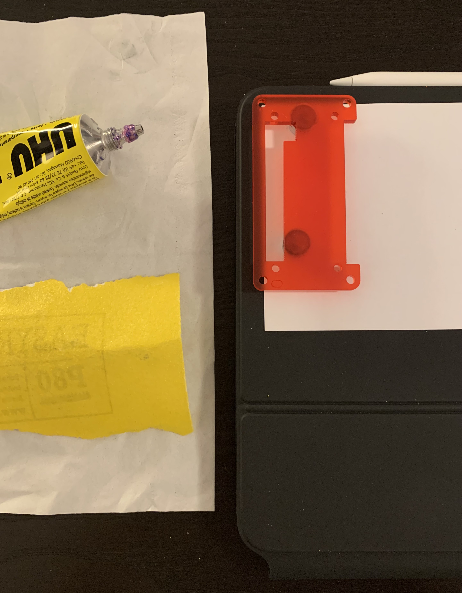
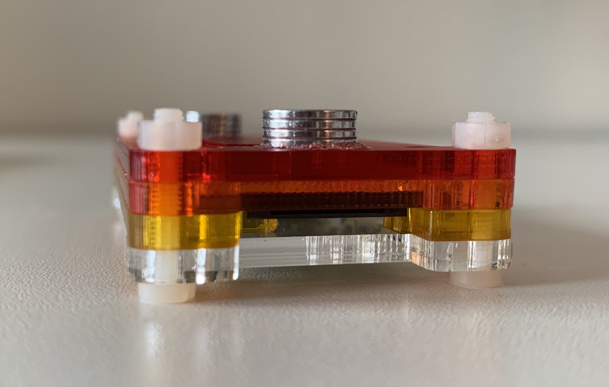
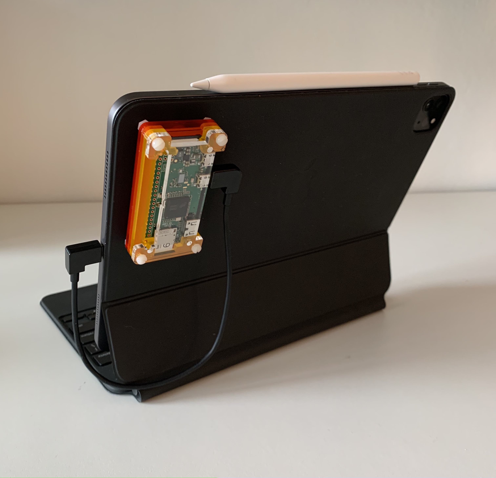

Pi Zero
So last week I bought a Pi Zero hoping it could replace the AWS EC2 instance that I currently use to give my iPad Pro an actual shell and make it not useless. It’s got a few warts, but overall I’m pretty happy with it.
My motivation for going with a local SSH server is mostly in not being dependent on a decent internet connection, though price, control and ping are upsides as well. And Ethernet over USB lets you do this conveniently: you can tether devices like a Raspberry Pi to an iPad and power them with a single cable.
I chose a Pi Zero specifically because it’s inexpensive, uses little power and should still be fast enough for my usecase. Also, the Magic Keyboard is full of magnets:

(Source: iFixit)
All of the little black squares are magnets, and the Pi Zero is tiny enough that you could probably attach it magnetically to the back of the Magic Keyboard, which would be pretty cool. Most other single board computers would not stow away this conveniently and probably require an extra powerbank too.
So I bought a bunch of neodymium magnets off AliExpress for like $2, and using the xray as a guide, I looked for a suitable position for a pair of magnets. Then I just glued them to a Pibow case with standard household glue after sanding them down a bit.

Since the magnets are shaped as thin discs you can just stack as many as you need. In my case, four individual magnets stack up to be about as high as the screws on the Pibow:


This way, the Pi is sitting flush against the back of the Magic Keyboard and won’t budge. It’s also easy to take off or put back on. USB over Ethernet works without hassle, and it doesn’t kill battery life too much - I would guess you can get about 6-10h of active usage on the 11" iPad Pro, depending on workload. You can optimize it a bit by disabling the LED:
echo 0 | sudo tee /sys/class/leds/led0/brightness
Generally speaking, it does draw noticeable power under load, but in idle the impact is small and the Magic Keyboard lets you charge while using anyway.
So overall, it actually turned out that magnetically attaching the Pi works as well as it sounds in theory. A short, angled cable is key though - a convenient place to put the Zero is worth nothing if you have to deal with 2 meters of cable.
And frankly, finding such a cable is a huge pain in the ass. I had to try several and ran into weirdness such as the orientation of the USB-C connector actually mattering for one cable, or another that would only deliver power from Micro USB to USB-C and not the other way around.
Once I finally got things working, I started writing this blog post on the Zero as an initial experiment. This kind of boils down to just editing text files, but I’m using Hugo which has a neat live preview server, and I wanted to get that running directly on the Pi Zero.
This is where I started running into software issues. The Hugo version in the official Raspbian repos is so old it wouldn’t work with my theme. Not a problem, I thought, there’s a recent version available in the Debian backports repo.
Actually it was a problem though. The Pi Zero’s BCM2835 is an ARMv6 CPU, a spec from 2002! And running Hugo from the backports repo merely yields:
$ hugo
[1] 6448 illegal hardware instruction hugo
Clearly the binaries in the backports repo aren’t compatible with ARMv6. So I tried building Hugo from source and ran into basically the same problem. It went and collected about 600 dependencies until it realized some of them required a more recent version of Go to build.
It took like 20 minutes just to get to that point, so I was not about to try also building Go from source on a Pi Zero. Luckily cross compilation is a thing, and it’s easy - I just ran this on my desktop:
env GOOS=linux GOARCH=arm GOARM=6 go build
And after about a minute it had produced a binary that actually worked on the Pi Zero!
So luckily there weren’t any unsolvable issues, and with this one out of the way, it did the job just fine. The Zero does work at a very leisurely pace, but my usecase doesn’t need much power anyway. And honestly I kind of like that it takes its time. It’s not so slow as to be unresponsive, and waiting a few seconds for it to build your site has got some relaxing quality to it.
However, one of the most annoying things about a VPS is moving files between it and the iPad, and I haven’t really solved that on the Pi Zero yet. Currently I’m using SMB, which works, though there are some quirks and it still takes a lot of clicks just to move a file to the Pi. So this is quite suboptimal.
Interestingly there seems to be a way to AirDrop files onto a Pi but it looks like this would prevent you from connecting the Pi to the internet using Wi-Fi. I might look into whether that can be solved at a later point. If I can get it to work, it’d be a perfect solution for this problem.
Conclusion#
Pro:
- One less subscription
- Not dependent on a decent internet connection
- No ping
- Full control
- Inexpensive
- Much more storage than cheap VPS usually offer
Con:
- Slow
- Have to wait for boot
- Have to plug/unplug it
- You should also
shutdownon disconnect - Draws extra power
- Extra dongle to carry around
- (but it’s literally a computer dongle which is pretty cool)
- Outdated repos
Overall I’ll call this a win since most of the cons aren’t that big to me personally. However if you need even just a modest amount of compute horsepower then a Pi Zero is probably not going to be enough for you, and you’ll have to resort to something much clunkier like a Pi 4 with a powerbank, at which point an EC2 instance is probably more practical again.